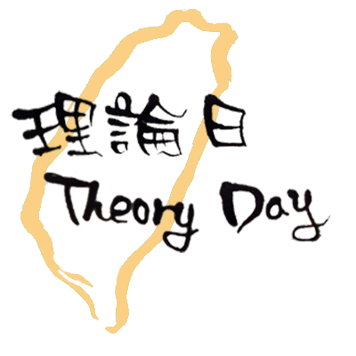

Theory Day in Taiwan (2019)
Date: Monday, 7 October, 2019
Location: Conference Room 142 at Department of Electrical Engineering, NTU
Past Theory Days in Taiwan: 2016A@Taipei, 2016B@HsinChu, 2017A@Taipei, 2017B@HsinChu, 2017C@Taipei, 2018@Taipei
The Theory Day in Taiwan is an experimental one-day event that aims to stimulate interaction and discussion for TCS researchers in Taiwan and nearby countries. We plan to host 3-4 hour-long talks in general TCS area with long breaks for interaction. The meeting is free and open to everyone; in particular, students are encouraged to attend. We also create mailing lists for disseminating theory-related events in Taiwan. Please subscribe NOW for more information about Theory Day and Theory Event in Taiwan!!
Speakers: Paul Horn, Bar Alon, Takashi Yamakawa
Subscribe to the Mailing List !